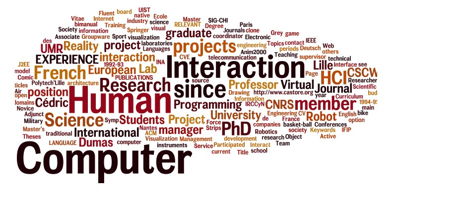
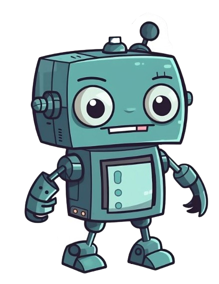

Definisi Interaksi Manusia Dan Komputer (IMK)
 Interaksi manusia dan komputer adalah disiplin ilmu yang mempelajari hubungan antara manusia dan komputer yang meliputi perancangan, evaluasi, dan implementasi antarmuka pengguna komputer agar mudah digunakan oleh manusia. Sedangkan interaksi manusia dan komputer sendiri adalah serangkaian proses, dialog dan kegiatan yang dilakukan oleh manusia untuk berinteraksi dengan komputer secara interaktif untuk melaksanakan dan menyelesaikan tugas yang diinginkan.IMK atau interaksi manusia dan komputer adalah suatu ilmu yang sangat berkaitan dengan disain implementasi dan evaluasi dari sistem komputasi iyang interaktif untuk digunakan oleh manusia dan studi tentang ruang lingkupnya,ada interaksi antara satu atau lebih manusia dan satu atau lebih komputasi mesin. Agar komputer dapat diterima secara luas dan digunakan secara efektif, maka perlu dirancang secara baik. Hal ini tidak berarti bahwa semua sistem harus dirancang agar dapat mengakomodasi semua orang, namun komputer perlu dirancang agar memenuhi dan mempunyai kemampuan sesuai dengan kebutuhan pengguna secara spesifik.
Pada tahun 1970 mulai dikenal istilah antarmuka pengguna (user interface), yang juga dikenal dengan istilah Man-Machine Interface (MMI), dan mulai menjadi topik perhatian bagi peneliti dan perancang sistem.Perusahaan komputer mulai memikirkan aspek fisik dari antarmuka pengguna sebagai faktor penentu keberhasilan dalam pemasaran produknya.Istilah human-computer interaction (HCI) mulai muncul pertengahan tahun 1980-an sebagai bidang studi yang baru. Istilah HCI mengisyaratkan bahwa bidang studi ini mempunyai fokus yang lebih luas, tidak hanya sekedar perancangan antarmuka secara fisik.
Komponen Interaksi Manusia dan Komputer
Komponen komponen Interaksi Manusia Komputer Terdiri Dari 3 Bagian Yaitu :
- Manusia
- Komputer
- Interface
Manusia merupakan pengguna user yang memakai komputer atau sistem tersebut, dimana manusia sendiri memiliki karakter dan perilaku yang berbeda beda dengan kebutuhannnya dalam menggunakan komputer.
Komputer merupakan peralatan elekteronik yang terdiri dari perangkat keras dan perangkat lunak.
Manusia dan komputer berinteraksi melalui antar muka yang ada di dalam sistem komputer yang memungkinkan manusia berhubungan dengan komputer.
Tujuan Interaksi Manusia Dan Komputer
-
Membuat sistem yang lebih :
- Berguna (usable)
- Aman
- Produktif
- Efektif
- Efesien
- Fungsional
-
Meningkatkan interaksi antara manusia dengan sistem komputer
Sistem yang bermanfaat (usable) dan aman (safe), artinya sistem tersebut dapat berfungsi dengan baik. Sistem tersebut bisa untuk mengembangkan dan meningkatkan keamanan (safety), utilitas (utility), ketergunaan (usability), efektifitas (efectiveness) dan efisiensinya (eficiency).
Sistem yang dimaksud konteksnya tidak hanya pada perangkat keras dan perangkat lunak, tetapi juga mencakup lingkungan secara keseluruhan, baik itu lingkungan organisasi masyarakat kerja atau lingkungan keluarga. Sedangkan Ketergunaan (usability) disini dimaksudkan bahwa sistem yang dibuat tersebut mudah digunakan dan mudah dipelajari baik secara individu ataupun kelompok. Utilitas mengacu kepada fungsionalitas sistem atau sistem tersebut dapat meningkatkan efektifitas dan efesiensi kerjanya.